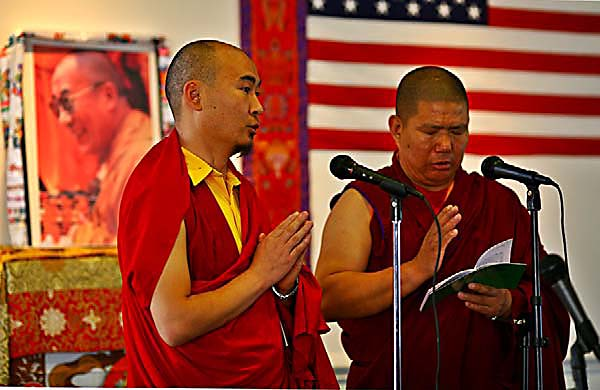
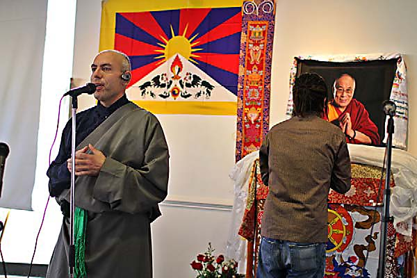
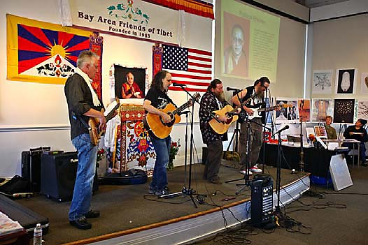
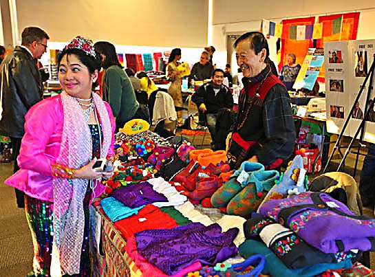
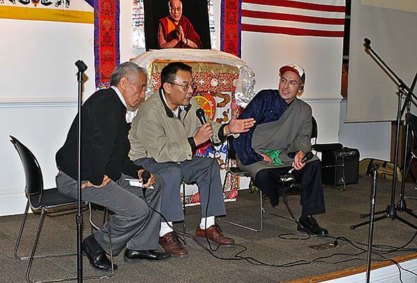
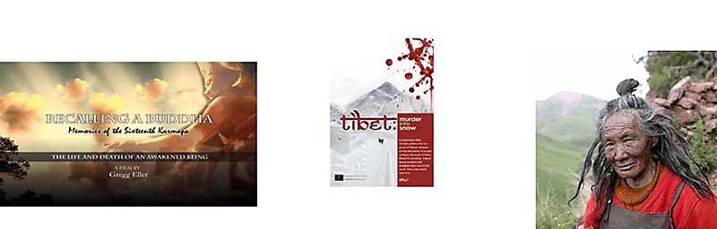
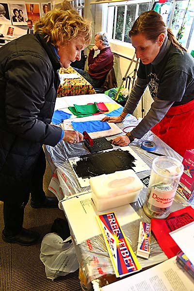
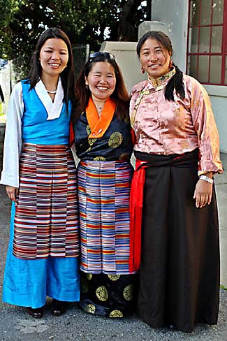
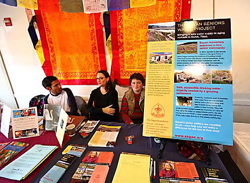

24th Annual Tibet Day Report
Looking at the World with Eyes of Compassion
by Giovanni Vassallo Photos by John Amato

(Venerable Khenpo Kunzang from Kagyu Droden Kunchab and Venerable Geshe Lobsang Khenrab from Nechung Buddhist Center offer the Tibet Day 2009 opening blessing prayers)
(Dec. 7, 2009) Over five hundred people attended the 24th Annual Tibet Day fair held at Ft. Mason, San Francisco on Saturday, December 5, 2009 at the Fort Mason Conference Center in San Francisco, California. It was an early celebration of the 20th Anniversary of His Holiness the Dalai Lama’s Nobel Prize for Peace, a Tibet Fest that included numerous Tibetan cultural performance artists, vendors, films, fun, food, and information. Highlighting the day were cultural performances by one of Tibet’s famous top ten popular and traditional musicians, Penpa Tsering (Pemsi) who had just come straight from India to attend the event. Author, activist, & dissident-writer, Canyon Sam, famed photographer Don Farber, and Kasur Tenzin N. Namgyal, former Chief Cabinet Member of His Holiness the Dalai Lama’s Tibetan Government-in-Exile addressed the gathering at different times throughout the day. Dozens of Tibetan nonprofit organizations such as the Nechung Buddhist Center graced the festival designed to simultaneously provide entertainment and education on the greater world of Tibet, Tibetans, Tibetan Buddhism.

(BAFoT President Giovanni Vassallo speaks as popular musician Penpa Tsering “Pemsi” pays respect to His Holiness the Dalai Lama’s portrait.)
The program began with the organizers and audience members lining up to offer a khata, a traditional Tibetan symbol of purity and good luck, to the portrait of His Holiness the Dalai Lama in an early celebration of the
December 10th -20th Anniversary of the Dalai Lama’s Nobel Prize for Peace. A festive Tibetan rice dish, dresil was served. Numerous people expressed their appreciation and devotion paid their respects including by prostrating themselves toward the Dalai Lama’s picture. Prior to khata presentations, a beautiful portrait of the Dalai Lama by Michael Collopy that was provided by Vice President of Committee of 100 for Tibet and Executive Director of The Missing Peace Project Darlene Markovich, was displayed on the stage’s altar set for the festival.
(Katie Ferrick reads Congresswoman Jackie Speier’s Tibet Day statement)
Later, Katie Graves Ferrick, a Field Representative from the Office of Congresswoman Jackie Speier read a statement from the Congresswoman to the Tibetan festival attendees. “I am honored to have been invited to address Friends of Tibet …” was read. “This special day reminds us that there is much to celebrate in the rich, vibrant culture of the Tibetan people. However, it is also a day for reflection as we consider the deplorable treatment of the Tibetan people in their homeland. It is at the forefront of our U.S. foreign policy on human rights that we continue, with fierce determination to promote a free Tibet.”
Congresswoman Speier reminded us of His Holiness the Dalai Lama’s advice “never to allow the actions of a few mischievous people to color our views of an entire ethnic or religious group. I will hold the messages from His Holiness dear as I go forward in my work in the United States Congress and as we mark International Human Rights Day…Thank you to… Bay Area Friends of Tibet for your passionate dedication to ensuring that the democratic values we hold dear are always carried forward.”
Congresswoman Jackie Speier's statement also noted that the "deplorable condition and treatment of the Tibetan people shocks our global sensibilities...It is absolutely at the forefront of our U.S. foreign policy on human rights that we continue , with fierce determination, to promote a free Tibet." Field Representative Ferrick was warmly welcomed at the Tibet Day festival.

(The Dharma Bums sing “Rangzen”)
All day there were several entertaining musical and dance performances by diverse groups of American, Tibetan, Burmese and other artists. They all were united in expressing solidarity with the struggle of the people of Tibet and joined the organizers “Looking at the World with Eyes of Compassion.”

(Tibetan vendor, Dorji Lama, owns the original Tibet Shop in San Francisco, smiles during the Tibet Day festival)
Hundreds of people sampled Tibetan momos and Tibetan and human rights activists tabled information about various facets of the just cause of Tibet. Over 30 local Tibetan business or Tibetan and human rights organizations were represented at the event. Tibetan Buddhist centers such as the Tibetan Nyingma Institute were on hand to provide information to the public about their service activities.
(Eating Tibetan momos and enjoying the cultural performances)
The event included an afternoon panel discussion with a former president of Bay Area Friends of Tibet, Thepo Tulku and George Ge, a Han Chinese and former student democracy activist leader. It was moderated by Giovanni Vassallo. Back in September of 2003, His Holiness had given guidance to the BAFoT board that one of the most important things that the Friends of Tibet could do was to work to bridge the gap in understanding that exists between Chinese and Tibetan people.
The panelists stressed the importance of His Holiness the Dalai Lama’s work to promote peace and friendship and understanding between the two peoples. Thepo Tulku talked about caring and sharing and working together with Chinese and Tibetan friends on the basis of mutual trust. Mr. Ge expressed special admiration for His Holiness the Dalai Lama’s peaceful efforts and Middle Way Approach. He reminded us of the extreme fear that exists in some Chinese minds, “because they have been brainwashed…by the Chinese government.” He encouraged everyone to work together and never give up on the possibility of true and lasting friendships between the two peoples.
Later the moderator asked the audience for comments or questions on the topic. Amongst the comments, one audience member mentioned that “jumper cables” were needed. The moderator, a former Tibetan Buddhist monk, agreed. “Yes, we need jumper cables between the two people,” he said. We can give life to a good friendship between the Chinese and Tibet people by building such a connection. But, that spark to ignite the cable of the friendship must come from generating one’s own warm and compassionate heart and especially by paying attention to each other,” A few audience members could be seen nodding their heads in agreement. He continued, “Good friends pay close attention to each other.”
Afterwards, some laughs were had because, the commenting audience member, a performer from the Dharma Bums and friend of the moderator, actually needed real automobile jumper cables to start his stalled car in the venue’s parking lot! Compassionate volunteers stepped into quick action and provided assistance.

(Thepo Tulku, George Ge, and Giovanni Vassallo discuss friendship and understanding between the Chinese and Tibetan people)
Three films were each played twice during the day: Tibet: Murder in the Snow, Recalling a Buddha: Memories of the 16th Karmapa, and Journey to Nangchen. The filmmakers of these documentaries, Greg Eller, and BAFOT secretary Barbara Green were on hand to answer questions about them.

(Recalling a Buddha: Memories of Sixteenth Karmapa, Tibet: Murder in the Snow, and Journey to Nangchen played twice throughout the day at Tibet Day on December 5, 2009)
Yangchen Lhamo of Students for a Free Tibet gave updates on the most current and urgent political campaigns, including some for the release of Tibet’s political prisoners. She spoke about the recent executions of Lobsang Gyaltsen and Loyak and other Tibetans.

(Susan Shannon, Director of Thukje Choling Buddhist Center, assists a fair-goer on making a Tibetan prayer flag)
A silent slide show was played continuously in the main exhibit room that gave visual education to the public about some of the 2008 & 2009 activities of Bay Area Friends of Tibet. It was interspersed with images expressing Tibetan and American solidarity with Chinese people who faced oppression as well as with other images of current Tibetan political prisoners such as the 11th Panchen Lama, missing since 1995.

(Tibet Day volunteers, Sonam Lhamo, BAFoT board member Tsering Vassallo and Tashi Lhamo)
An evening concert included delightful performances by local Tibetan youth artists, Semshug Pundha. Pemsi wowed the crowd with his new songs. He sung Jetsun Pema, a song about the Dalai Lama’s sister. Tsering Wangmo and her students performed traditional songs. The Dharma Bums also sang songs about Tibet, Buddhism, and the Dalai Lama, as well as on Tibetan freedom. South African Bushman Gideon Bendile and friend of Tibet performed his signature song from the movie, the Lion King and a delightful wondrous Burmese dancing performance by Kalayar Bertecivch and the Burmese Youth Association were given. Elegantly leading a final Tibetan gorshay dance was Tsering Wangmo with her many Tibetan dance students.

(The Sogan Foundation presentation table at 24th Annual Tibet Day)
Proceeds from the event were earmarked to help BAFoT continue its mission to educate the public about Tibet. Sharon Bacon, The Committee of 100 for Tibet, Third Eye Travel, the University of San Francisco’s religious studies class taught by Prof. John Nelson, and The Dalai Lama Foundation, and Giovanni and Tsering Vassallo were cosponsors of the eleven hours-long program. The organizers thanked the sponsors and the many volunteers for their important contributions.
(Tenzin N. Tethong, President of The Dalai Lama Foundation, spoke about the importance of Friends of Tibet.)
(Wakaido Taiko enlivened the crowd and expressed solidarity with the Tibetan people)
More photographs
ABOUT BAY AREA FRIENDS OF TIBET
Founded in 1983, BAFoT is a non-sectarian, non-profit, tax-exempt 501(c)(3) organization and is the US West Coast's original Tibet support group. BAFoT educates the public about Tibet and the Tibetan people; organizes grassroots projects and events to benefit Tibetans locally and internationally. BAFoT organizes events in cooperation with local, national, or international Tibetan groups or individuals.

His Holiness Dalai Lama with members of Bay Area Friends of Tibet September 2003
Mission:
The mission of BAFoT is to study, promote interest in, and actively preserve Tibetan culture in all its aspects; to educate the general public in matters pertaining to Tibet and the Tibetan people; and to provide assistance to Tibetans.
Announcements
- Tibetans and supporters from all over US headed to DC to protest Xi Jinping’s Visit
- Leader Nancy Pelosi's speech on March 10, 2015
- China: Human #Rights365 = Human Rights for All
- Humanitarian China note of thanks for Friends of Tibet solidarity on Tiananmen 25th anniversary
- Dhondup Wangchen released, thanks supporters
- Statement of Tashi Lhunpo Monastery on the Panchen Lama's 25th Birthday
- Rep. Pelosi's statement on March 10
- Dhondup Wangchen Campaign: "Unchain The Truth"
- Appeal for help for Phuntsokling Tibetan Settlement in Odisha
- Committee to Project Journalists concerned about Dhondup Wangchen
Subscribe to our email list

© 2008 - 2012 Bay Area Friends of Tibet